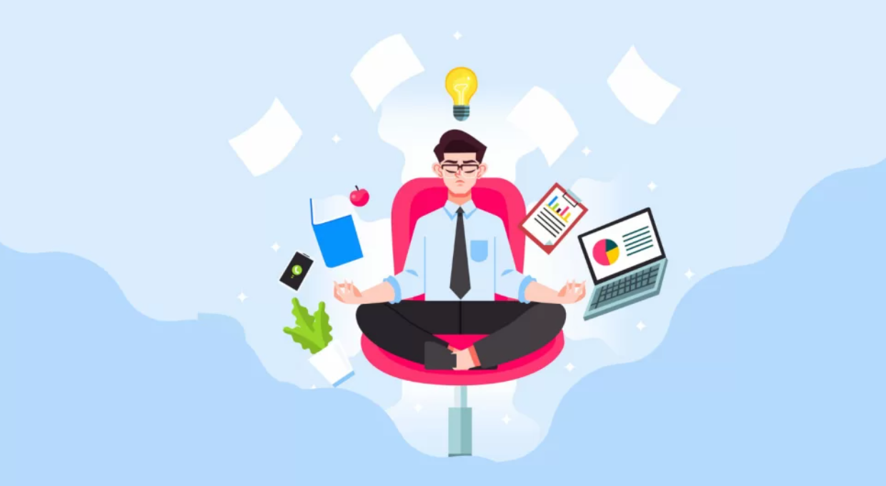

العالم الرقمي يمنحنا فرصًا هائلة للتعلم والعمل والتواصل، لكنه في نفس الوقت قد يسلبنا لحظاتنا الواقعية إذا لم نعرف كيف نوازن بين الاثنين.
لماذا نحتاج إلى التوازن؟
البقاء متصلًا طوال الوقت يستهلك طاقتك ويؤثر على صحتك وعلاقاتك. التوازن يمنحك حياة أكثر صحية ورضًا داخليًا.
خطوات عملية لتحقيق التوازن
- حدد وقتًا لاستخدام الأجهزة الرقمية ووقتًا للحياة الواقعية.
- خصص أوقات بدون شاشة (No-Screen Time) يوميًا.
- مارس نشاطات مثل الرياضة أو القراءة بعيدًا عن الأجهزة.
- اجعل لقاءاتك الاجتماعية وجهاً لوجه قدر الإمكان.
فوائد التوازن
التوازن بين الحياة الرقمية والواقعية يحسن إنتاجيتك، يقلل التوتر، ويمنحك وقتًا لجوانب أخرى مهمة مثل العائلة، الأصدقاء والهوايات.
التغلب على الإدمان الرقمي
من أصعب التحديات هو كسر عادة الاستخدام المفرط. لكن يمكنك البدء بخطوات بسيطة مثل إيقاف الإشعارات أو استخدام تطبيقات لتقييد وقت الشاشة.
الخاتمة
حياتك أثمن من أن تُهدر كلها أمام شاشة. اجعل العالم الرقمي وسيلة تخدمك لا تسيطر عليك. التوازن هو سر العيش بوعي وسعادة.